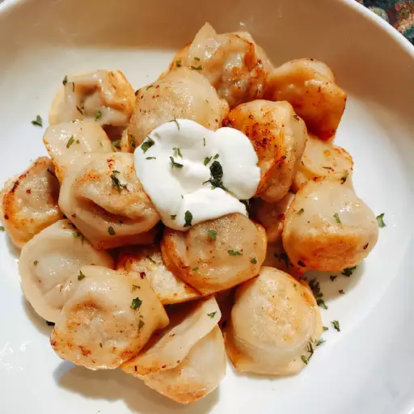

The fried pelmeni recipe

To make gread pelmeni you need:
- Frozen pelmeni
- Cooking oil
- A bit of water
- Some ketchup (optional)
Directions:
- Add frozen pelmeni to pan with a generous amount of oil
- Fry with lid on pan first, then remove the lid and fry on medium high heat until pelmeni start to get golden brown
- Add about 1/4 glass of water and 1/4 glass of ketchup to the pan
- Fry on medium heat until the pelmeni are no longer floating in liquid
- Enjoy with some sour cream!